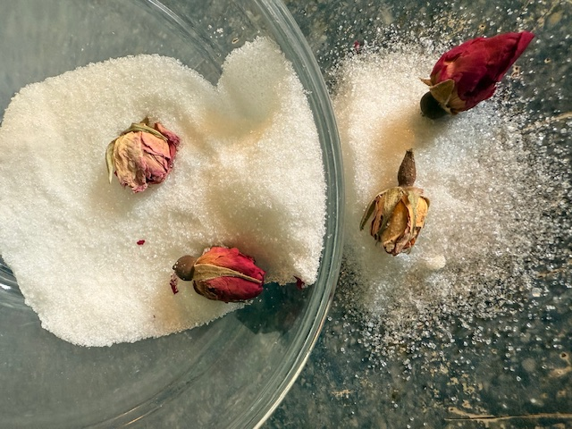

Fire cider is a great for the immune system. Take daily to boost immunity with one tablespoon cider. If under the weather
take three tablespoons. "Mix all the ingredients and place in a dark cupboard for one month.
Strain cider with a cheesecloth and store in mason jars for up to six months.
Organic apple cider vinegar
½ cup of fresh horseradish root, finely chopped or grated
½ cup of fresh ginger root, finely chopped or grated
1/8 cup of fresh turmeric root, finely chopped or grated
½ cup of onion, finely chopped
2 to 3 jalapenos, finely chopped
8 to 10 cloves of fresh garlic, finely chopped or crushed
1 lemon, sliced
½ orange, sliced
1 cinnamon stick
2 sprigs of fresh rosemary or 1 tablespoon of dried rosemary leaves
3 sprigs of fresh thyme or 1 tablespoon of dried thyme leaves
1 teaspoon of whole peppercorns
Raw honey to taste, about ¼ cup
Knife
Cutting board
Grater
1 quart-sized Mason jar
Infused Sugar

Flavored sugars can be used in the place of any regular sugar when baking or to sweeten tea.
Herbs that can be used with your sugars are:
Lavender, Vanilla bean, Rose, Violet, Mint leaves, Orange blossom.
Not limited to just these herbs, be creative, but always seen if the herbs and spices, but always check if the herbs and spices are safe for digestion.
You are going to clean your herbs, gather your sugar and spices to a jar and cap tightly. Allow to mature
for three weeks. It's worth the wait. You will sift through and take out any petals, if used. Add to tea, baking,
or on a piece of toast.
Yummy Smoothie
Non-Dairy Smoothie
Ingredients
fruit of your choice(apple,mango,pineapple, strawberries, banana and blueberries)
1/4 cup fruit juice (apple,pear,or white grape)
1 teaspoon sugar
Fruit for garnish
Instructions
Peel, seed, and dice the fruit. Place all ingredients into a blender. Cover and blend. Pour into glass
and garnish with fruit. Sit back and enjoy the yummy smoothie.